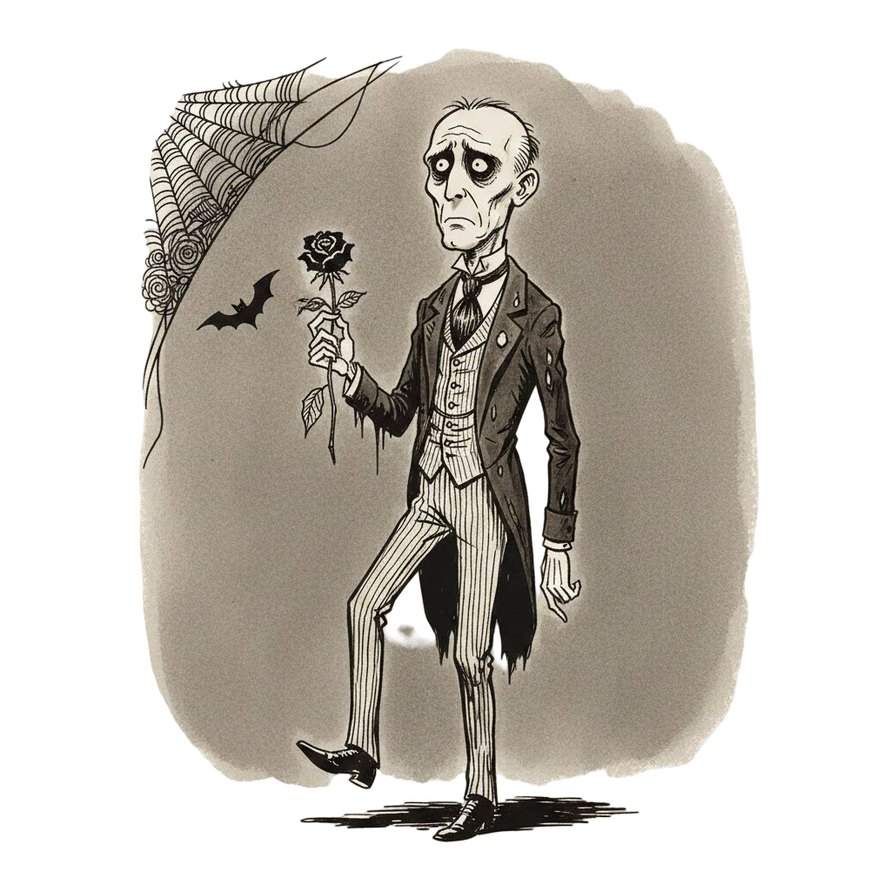

<!DOCTYPE html>
<html lang="ca">

<head>
    <meta charset="UTF-8">
    <meta name="viewport" content="width=device-width, initial-scale=1.0">
    <title>DIARI ADDAMS</title>
    <script src="https://cdn.tailwindcss.com"></script>
    <script src="https://unpkg.com/react@18/umd/react.development.js"></script>
    <script src="https://unpkg.com/react-dom@18/umd/react-dom.development.js"></script>
    <script src="https://unpkg.com/@babel/standalone/babel.min.js"></script>
    <link href="https://fonts.googleapis.com/css2?family=Special+Elite&display=swap" rel="stylesheet">
    <style>
        body {
            font-family: 'Special Elite', cursive;
            background-color: #1a1a1a;
            color: #d1d1d1;
        }

        .paper-texture {
            background-color: #e3dac9;
            background-image: url("https://www.transparenttextures.com/patterns/aged-paper.png");
            box-shadow: 0 0 50px rgba(0, 0, 0, 0.9) inset;
            color: #2b2b2b;
        }

        .typewriter-cursor::after {
            content: '|';
            animation: blink 1s step-start infinite;
        }

        @keyframes blink {
            50% {
                opacity: 0;
            }
        }

        @keyframes fadeIn {
            from {
                opacity: 0;
                transform: translateY(10px);
            }

            to {
                opacity: 1;
                transform: translateY(0);
            }
        }

        .animate-fade-in {
            animation: fadeIn 0.5s ease-out;
        }

        /* Feedback Animations */
        @keyframes flashGreen {

            0%,
            100% {
                background-color: transparent;
            }

            50% {
                background-color: rgba(0, 100, 0, 0.2);
            }
        }

        @keyframes flashRed {

            0%,
            100% {
                background-color: transparent;
            }

            50% {
                background-color: rgba(139, 0, 0, 0.2);
            }
        }

        .feedback-correct {
            animation: flashGreen 0.5s ease-out;
            border-color: #2f4f2f !important;
        }

        .feedback-wrong {
            animation: flashRed 0.5s ease-out;
            border-color: #8b0000 !important;
        }

        /* Tick Mark */
        .tick-mark {
            color: #2f4f2f;
            font-size: 1.5em;
            position: absolute;
            top: -10px;
            right: -10px;
            text-shadow: 1px 1px 0px rgba(0, 0, 0, 0.2);
        }
    </style>

    <!-- INICIO_AUTO_ZOOM_ANTIGRAVITY -->
    <script>
        function autoEscalar() {
            const anchoDiseno = 1920; 
            const escala = window.innerWidth / anchoDiseno;
            if (escala < 1) {
                document.body.style.zoom = escala;
            } else {
                document.body.style.zoom = 1;
            }
        }
        window.addEventListener('resize', autoEscalar);
        window.addEventListener('DOMContentLoaded', autoEscalar);
    </script>
    <!-- FIN_AUTO_ZOOM_ANTIGRAVITY -->

</head>

<body
    class="h-screen overflow-hidden select-none flex items-center justify-center bg-[url('https://www.transparenttextures.com/patterns/dark-leather.png')]">
    <div id="root" class="w-full h-full flex items-center justify-center"></div>
    <script type="text/babel" data-type="module">
        const { useState, useEffect, useMemo } = React;

        const shuffleArray = (array) => {
            for (let i = array.length - 1; i > 0; i--) {
                const j = Math.floor(Math.random() * (i + 1));
                [array[i], array[j]] = [array[j], array[i]];
            }
            return array;
        };

        const DIARY_DATA = {
            "Edat Mitjana": [
                {
                    topic: "Cant Gregorià",
                    cold: "Era una línia melòdica estricta i sense acompanyament per a no distreure l'oració.",
                    cursi: "Era una línia melòdica preciosa i sense acompanyament per a no tacar l'oració."
                },
                {
                    topic: "Els Monjos",
                    cold: "Tancats al monestir, copiaven textos antics per a preservar el coneixement.",
                    cursi: "Tancats al monestir, copiaven textos antics per a regalar el coneixement."
                },
                {
                    topic: "Els Trobadors",
                    cold: "Viatjaven de cort en cort cantant en llengua vulgar per diners.",
                    cursi: "Viatjaven de cort en cort cantant en llengua vulgar per amor."
                },
                {
                    topic: "Escriptura",
                    cold: "Van inventar els neumes quadrats per a recordar les melodies.",
                    cursi: "Van inventar els neumes quadrats per a alliberar les melodies."
                },
                {
                    topic: "Ars Nova",
                    cold: "És un sistema de notació musical precís per a mesurar el ritme.",
                    cursi: "És una nova manera de sentir el batec del cor de la música."
                }
            ],
            "Renaixement": [
                {
                    topic: "L'Humanisme",
                    cold: "L'home es va posar al centre de l'univers, desplaçant a Déu.",
                    cursi: "L'home es va posar al centre de l'univers, abraçant a Déu."
                },
                {
                    topic: "Polifonia",
                    cold: "Consisteix en combinar diverses veus independents seguint regles matemàtiques.",
                    cursi: "Consisteix en combinar diverses veus independents seguint regles màgiques."
                },
                {
                    topic: "Madrigal",
                    cold: "És una forma musical profana que descriu els textos amb precisió.",
                    cursi: "És una forma musical profana que descriu els textos amb passió."
                },
                {
                    topic: "Impremta Musical",
                    cold: "Permetia la difusió massiva de partitures a baix cost.",
                    cursi: "Permetia que les melodies volessin lliures cap a totes les llars."
                },
                {
                    topic: "La Reforma",
                    cold: "Luter volia que els fidels cantessin himnes en la seva pròpia llengua.",
                    cursi: "Luter volia que les ànimes s'unissin en un cant d'amor diví."
                }
            ],
            "Barroc": [
                {
                    topic: "Clavecí",
                    cold: "Les seves cordes són pinçades mecànicament i no pot fer matisos.",
                    cursi: "Les seves cordes són pinçades delicadament i no vol fer matisos."
                },
                {
                    topic: "Castrati",
                    cold: "Eren nens operats quirúrgicament per a mantenir la seva tessitura aguda.",
                    cursi: "Eren nens operats tràgicament per a oferir la seva tessitura aguda."
                },
                {
                    topic: "Baix Continu",
                    cold: "És una línia de baix ininterrompuda que sustenta l'harmonia.",
                    cursi: "És una línia de baix ininterrompuda que acaricia l'harmonia."
                },
                {
                    topic: "El Concert",
                    cold: "És una lluita dialèctica entre un solista i l'orquestra.",
                    cursi: "És un diàleg apassionat entre una ànima solitària i el món."
                },
                {
                    topic: "L'Òpera",
                    cold: "És teatre cantat amb regles estrictes i maquinària complexa.",
                    cursi: "És l'emoció feta música, on els sentiments esdevenen eterns."
                }
            ],
            "Classicisme": [
                {
                    topic: "L'Ordre",
                    cold: "La música buscava la claredat estructural i l'equilibri formal.",
                    cursi: "La música buscava la claredat espiritual i l'equilibri ideal."
                },
                {
                    topic: "Mozart",
                    cold: "Va ser un nen prodigi explotat pel seu pare per tot Europa.",
                    cursi: "Va ser un nen prodigi admirat pel seu pare per tot Europa."
                },
                {
                    topic: "Simfonia",
                    cold: "És una obra orquestral dividida en quatre moviments tècnics.",
                    cursi: "És una obra orquestral dividida en quatre moviments èpics."
                },
                {
                    topic: "Sonata",
                    cold: "Estructura formal A-B-A que organitza el discurs tonal.",
                    cursi: "Un viatge emocional on els temes es busquen i es troben."
                },
                {
                    topic: "Quartet de corda",
                    cold: "Conversa equilibrada entre quatre instruments de la mateixa família.",
                    cursi: "Quatre amics que comparteixen els seus secrets més íntims."
                }
            ],
            "Romanticisme": [
                {
                    topic: "Sentiment",
                    cold: "L'artista expressa el seu patiment interior sense filtres.",
                    cursi: "L'artista expressa el seu somni interior sense filtres."
                },
                {
                    topic: "Virtuós",
                    cold: "Músics com Paganini tocaven amb una tècnica mecànica impossible.",
                    cursi: "Músics com Paganini tocaven amb una tècnica diabòlica impossible."
                },
                {
                    topic: "Wagner",
                    cold: "Va crear l'obra d'art total per a controlar tots els aspectes de l'escena.",
                    cursi: "Va crear l'obra d'art total per a unir tots els aspectes de l'escena."
                },
                {
                    topic: "Lied",
                    cold: "Cançó per a veu i piano basada en un poema alemany.",
                    cursi: "El sospir d'un poeta que el piano recull amb tendresa."
                },
                {
                    topic: "Nacionalisme",
                    cold: "Ús de melodies folklòriques per a afirmar la identitat política.",
                    cursi: "El cant de la terra que plora per la llibertat del seu poble."
                }
            ],
            "Segle XX": [
                {
                    topic: "Atonalisme",
                    cold: "La música abandona la tonalitat i no té cap centre gravitatori.",
                    cursi: "La música abandona la tonalitat i no té cap límit imaginari."
                },
                {
                    topic: "Dodecafonisme",
                    cold: "Utilitza una sèrie de 12 notes ordenades matemàticament.",
                    cursi: "Utilitza una sèrie de 12 notes ordenades democràticament."
                },
                {
                    topic: "John Cage",
                    cold: "Va composar 4'33'' per a demostrar que el silenci no existeix.",
                    cursi: "Va composar 4'33'' per a demostrar que el silenci és música."
                },
                {
                    topic: "Minimalisme",
                    cold: "Repetició constant de patrons amb canvis graduals.",
                    cursi: "El batec hipnòtic d'una eternitat que es transforma lentament."
                },
                {
                    topic: "Música Electrònica",
                    cold: "Generació de sons mitjançant oscil·ladors i circuits.",
                    cursi: "Sons que neixen de l'electricitat com espurnes de vida nova."
                }
            ]
        };

        const ERAS = Object.keys(DIARY_DATA);

        const IntroScreen = ({ onStart, completedEras }) => (
            <div class="flex flex-col md:flex-row items-center justify-center gap-8 w-full max-w-6xl h-screen p-4">
                <div class="w-full md:w-2/3 h-[80vh] paper-texture p-12 flex flex-col items-center justify-center shadow-2xl rotate-1 relative z-10">
                    <div class="absolute top-4 left-4 w-32 opacity-80 mix-blend-multiply">
                        <svg viewBox="0 0 100 100" fill="none" stroke="black" strokeWidth="2">
                            <circle cx="50" cy="50" r="40" stroke="black" strokeWidth="4" />
                            <line x1="50" y1="50" x2="50" y2="20" strokeWidth="4" />
                            <line x1="50" y1="50" x2="80" y2="50" strokeWidth="4" />
                        </svg>
                    </div>

                    <h1 class="text-6xl md:text-8xl mb-8 text-black tracking-tighter opacity-90 typing-effect" style={{ fontFamily: "'Special Elite', cursive" }}>
                        DIARI ADDAMS
                    </h1>

                    <p class="text-xl md:text-2xl text-black mb-12 text-center max-w-2xl leading-relaxed">
                        Escull la resposta <span class="font-bold underline">freda, lògica i sense vida</span>. <br />
                        Evita la cursileria i l'alegria innecessària. <br />
                        <span class="text-lg mt-4 block">Tens dret a 3 errors (frases cursis o romàntiques) abans de perdre.</span>
                    </p>

                    <div class="grid grid-cols-2 md:grid-cols-3 gap-6 w-full max-w-3xl">
                        {ERAS.map(era => (
                            <button
                                key={era}
                                onClick={() => onStart(era)}
                                class="relative border-2 border-black px-4 py-3 text-black text-lg hover:bg-black hover:text-[#e3dac9] transition-all uppercase tracking-widest font-bold transform hover:-rotate-1"
                            >
                                {era}
                                {completedEras.includes(era) && (
                                    <span class="tick-mark">✓</span>
                                )}
                            </button>
                        ))}
                    </div>

                    <div class="absolute bottom-8 text-sm text-gray-600 italic">
                        * Propietat de D. Addams
                    </div>
                </div>

                {/* Character Image */}
                <div class="hidden md:block w-1/3 h-[80vh] relative flex items-center justify-center animate-fade-in delay-1000">
                    
                </div>
            </div>
        );

        const GameScreen = ({ era, onGameOver, onWin, onBack }) => {
            const [round, setRound] = useState(0);
            const [lives, setLives] = useState(3);
            const [shake, setShake] = useState(false);
            const [feedbackState, setFeedbackState] = useState(null); // 'correct' | 'wrong' | null

            const levelData = useMemo(() => {
                return shuffleArray([...DIARY_DATA[era]]);
            }, [era]);

            const currentItem = levelData[round];
            const hasMore = round < levelData.length - 1;

            const handleChoice = (type) => {
                if (feedbackState) return; // Prevent double clicks

                if (type === 'cold') {
                    // Correct (Cold/Fact)
                    setFeedbackState('correct');
                    setTimeout(() => {
                        setFeedbackState(null);
                        if (hasMore) {
                            setRound(prev => prev + 1);
                        } else {
                            onWin();
                        }
                    }, 600);
                } else {
                    // Wrong (Cursi)
                    setFeedbackState('wrong');
                    triggerShake();
                    setTimeout(() => {
                        setFeedbackState(null);
                        setLives(prev => {
                            const newLives = prev - 1;
                            if (newLives <= 0) {
                                onGameOver();
                                return 0;
                            }
                            return newLives;
                        });
                    }, 600);
                }
            };

            const triggerShake = () => {
                setShake(true);
                setTimeout(() => setShake(false), 500);
            };

            // Randomize buttons
            const options = useMemo(() => {
                if (!currentItem) return [];
                return shuffleArray([
                    { text: currentItem.cold, type: 'cold' },
                    { text: currentItem.cursi, type: 'cursi' }
                ]);
            }, [currentItem]);

            return (
                <div class={`w-full max-w-3xl h-auto min-h-[60vh] paper-texture p-8 md:p-16 shadow-2xl relative transition-transform duration-100 ${shake ? 'translate-x-2 translate-y-2' : ''}`}>
                    {/* Header */}
                    <div class="flex justify-between items-end border-b-2 border-black pb-4 mb-8">
                        <div class="flex flex-col">
                            <span class="text-sm uppercase tracking-widest opacity-60">Entrada del diari:</span>
                            <h2 class="text-2xl font-bold uppercase">{era}</h2>
                        </div>
                        <div class="flex gap-4 text-xl">
                            <span>🌸 {lives}</span>
                            <button onClick={onBack} class="text-sm underline hover:font-bold">Tancar</button>
                        </div>
                    </div>

                    {/* Content */}
                    <div
                        key={round}
                        className="flex flex-col gap-8 animate-fade-in"
                    >
                        <div class="mb-4">
                            <h3 class="text-3xl font-bold mb-2 underline decoration-wavy decoration-black/30">{currentItem?.topic}</h3>
                            <p class="text-gray-600 italic text-sm">Quina és la descripció adequada?</p>
                        </div>

                        <div class="flex flex-col gap-6">
                            {options.map((opt, idx) => (
                                <button
                                    key={idx}
                                    onClick={() => handleChoice(opt.type)}
                                    class={`group text-left p-6 border border-black/20 hover:border-black hover:bg-black/5 transition-all relative overflow-hidden
                                        ${feedbackState === 'correct' && opt.type === 'cold' ? 'feedback-correct bg-green-900/10' : ''}
                                        ${feedbackState === 'wrong' && opt.type === 'cursi' ? 'feedback-wrong bg-red-900/10' : ''}
                                    `}
                                >
                                    <span class="relative z-10 text-lg md:text-xl leading-relaxed group-hover:font-bold">
                                        "{opt.text}"
                                    </span>
                                    <div class="absolute left-0 top-0 bottom-0 w-1 bg-black transform scale-y-0 group-hover:scale-y-100 transition-transform origin-top"></div>
                                </button>
                            ))}
                        </div>
                    </div>

                    <div class="absolute bottom-4 right-4 text-xs opacity-40">
                        {round + 1} / {levelData.length}
                    </div>
                </div>
            );
        };

        const EndScreen = ({ type, onRestart }) => (
            <div class={`w-full max-w-2xl p-12 paper-texture shadow-[0_0_100px_rgba(0,0,0,1)] text-center flex flex-col items-center border-4 ${type === 'gameover' ? 'border-red-900' : 'border-black'}`}>
                <div class="text-8xl mb-6 opacity-80">
                    {type === 'gameover' ? '🥀' : '🕸️'}
                </div>
                <h1 class="text-5xl md:text-6xl font-black mb-6 uppercase tracking-widest">
                    {type === 'gameover' ? 'Massa Alegria...' : 'Deliciosament Fred'}
                </h1>
                <p class="text-xl mb-12 max-w-lg leading-relaxed font-bold">
                    {type === 'gameover'
                        ? 'Has omplert el diari de colorins i felicitat. La màquina d\'escriure s\'ha encallat de fàstic.'
                        : 'El teu diari és una obra mestra de la foscor i la realitat crua. La família estaria orgullosa.'}
                </p>
                <button
                    onClick={onRestart}
                    class="bg-black text-[#e3dac9] px-10 py-4 text-xl uppercase tracking-widest hover:bg-[#2b2b2b] transition-colors"
                >
                    {type === 'gameover' ? 'Intentar ser més fosc' : 'Tancar el taüt'}
                </button>
            </div>
        );

        const App = () => {
            const [gameState, setGameState] = useState('intro');
            const [selectedEra, setSelectedEra] = useState(null);
            const [completedEras, setCompletedEras] = useState([]);
            const [volume, setVolume] = useState(0.5);
            const audioRef = React.useRef(null);

            useEffect(() => {
                if (audioRef.current) {
                    audioRef.current.volume = volume;
                }
            }, [volume]);

            const playAudio = () => {
                if (audioRef.current) {
                    audioRef.current.play().catch(e => console.log("Audio play failed:", e));
                }
            };

            const startGame = (era) => {
                playAudio();
                setSelectedEra(era);
                setGameState('playing');
            };

            const reset = () => {
                setGameState('intro');
                setSelectedEra(null);
            };

            const handleWin = () => {
                if (selectedEra && !completedEras.includes(selectedEra)) {
                    setCompletedEras(prev => [...prev, selectedEra]);
                }
                setGameState('win');
            };

            return (
                <div class="w-full h-full flex items-center justify-center p-4 relative">
                    {/* Volume Slider */}
                    <div class="absolute top-4 right-4 z-50 flex items-center gap-2 bg-black/20 p-2 rounded-full hover:bg-black/40 transition-colors">
                        <span class="text-xl">🎵</span>
                        <input
                            type="range"
                            min="0"
                            max="1"
                            step="0.05"
                            value={volume}
                            onChange={(e) => setVolume(parseFloat(e.target.value))}
                            class="w-24 accent-black cursor-pointer"
                        />
                    </div>

                    <audio ref={audioRef} loop src="./audio/Skeleton Minuet.mp3" />

                    {gameState === 'intro' && <IntroScreen onStart={startGame} completedEras={completedEras} />}
                    {gameState === 'playing' && (
                        <GameScreen
                            era={selectedEra}
                            onGameOver={() => setGameState('gameover')}
                            onWin={handleWin}
                            onBack={reset}
                        />
                    )}
                    {(gameState === 'gameover' || gameState === 'win') && (
                        <EndScreen type={gameState} onRestart={reset} />
                    )}
                </div>
            );
        };

        const root = ReactDOM.createRoot(document.getElementById('root'));
        root.render(<App />);
    </script>
</body>

</html>